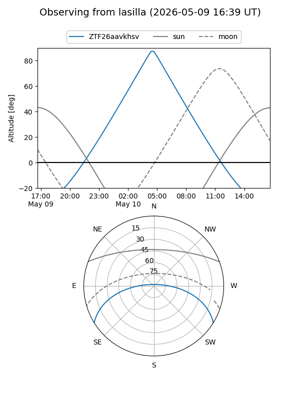
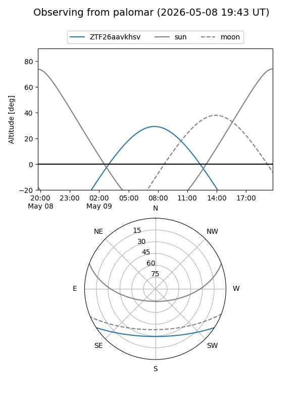

ZTF26aavkhsv
Target ZTF26aavkhsv at 2026-05-09 10:00
Aliases and brokers:
FINK: link
Lasair: link
ALeRCE: link
alt names
ZTF26aavkhsv (ztf,fink_ztf)
Coordinates:
equatorial (ra, dec) = 224.6319,-27.19508
equatorial (HMS+DMS) = 14:58:31.67,-27:11:42.30
galactic (l, b) = (334.8619,+27.68337)
Flags:
Photometry:
last ztfg=18.58
1 ztfg detections
Lightcurve
Visibility


Additional plots